2023.11に食べました。こちらのお店は「第13回沖縄そばスタンプラリー（2023.10.1～2024.2.29）」の参加店で、12店舗目/34店舗として行きました😊
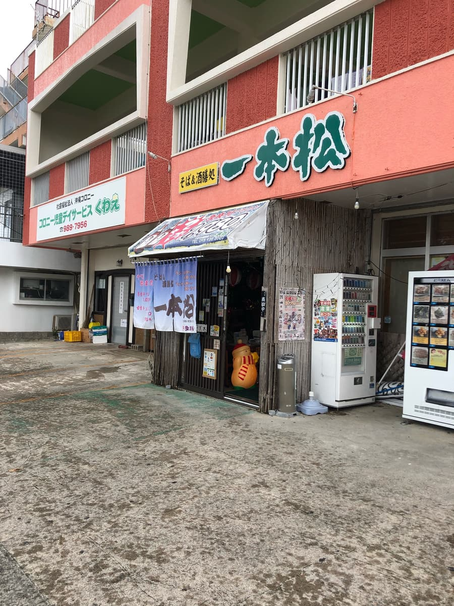
こちらのお店、普通の居酒屋と思っていましたが、今回のスタンプラリーで初めてお昼は沖縄そばランチやっているのを知りました(;^ω^)
店内はやはり居酒屋みたいな雰囲気ですが、今回はスタンプラリーの冊子で紹介されている「沖縄風マーボーそば」を注文することに。
メニュー表の一番最初にもこちらのメニューが紹介されていました。推しなのですかね？
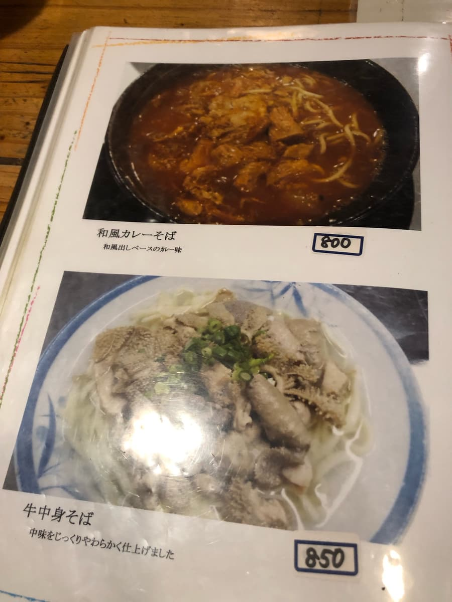
注文した後に、メニュー表をめくっていくと、こちらの一本松さんはかなり変わり種の沖縄そばーメニューが揃っていることに気づきました😁
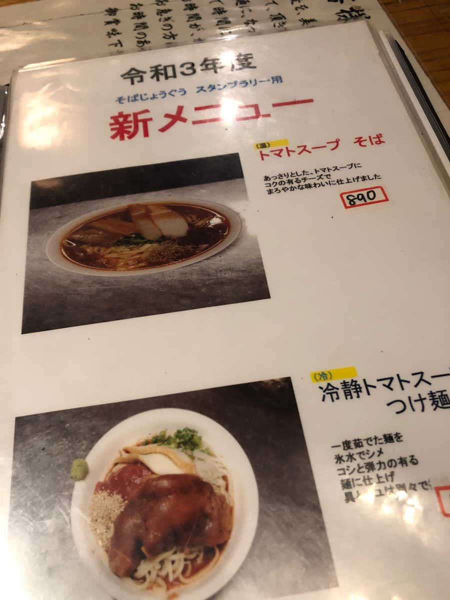
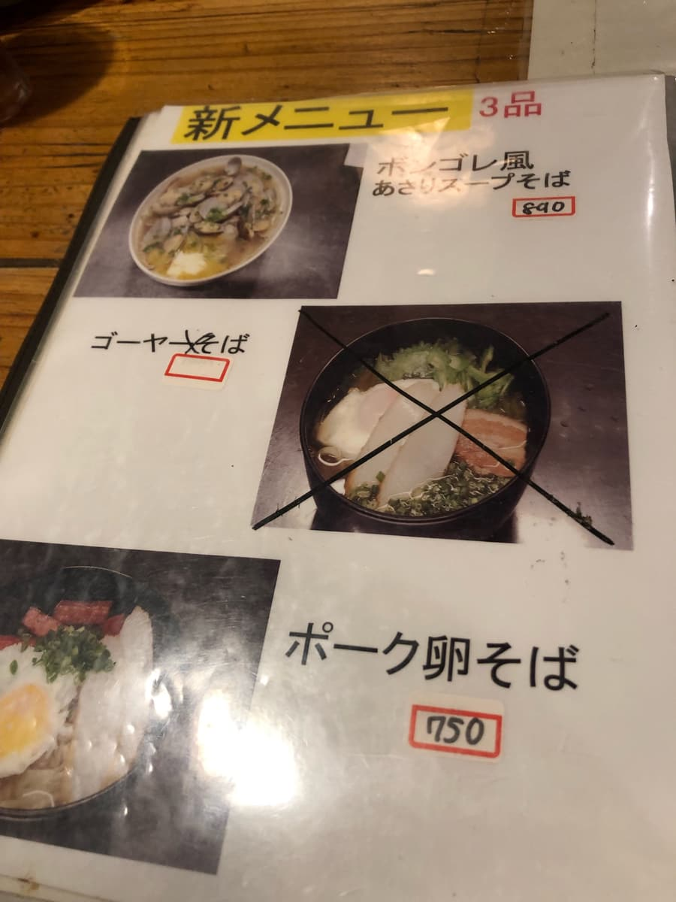
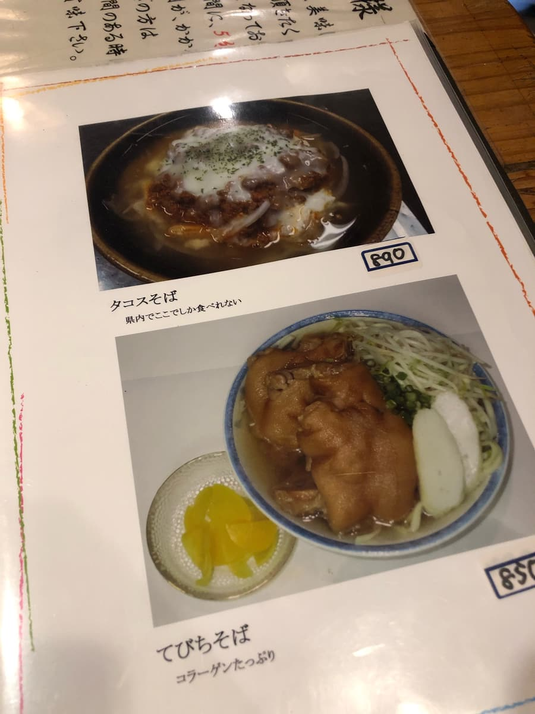
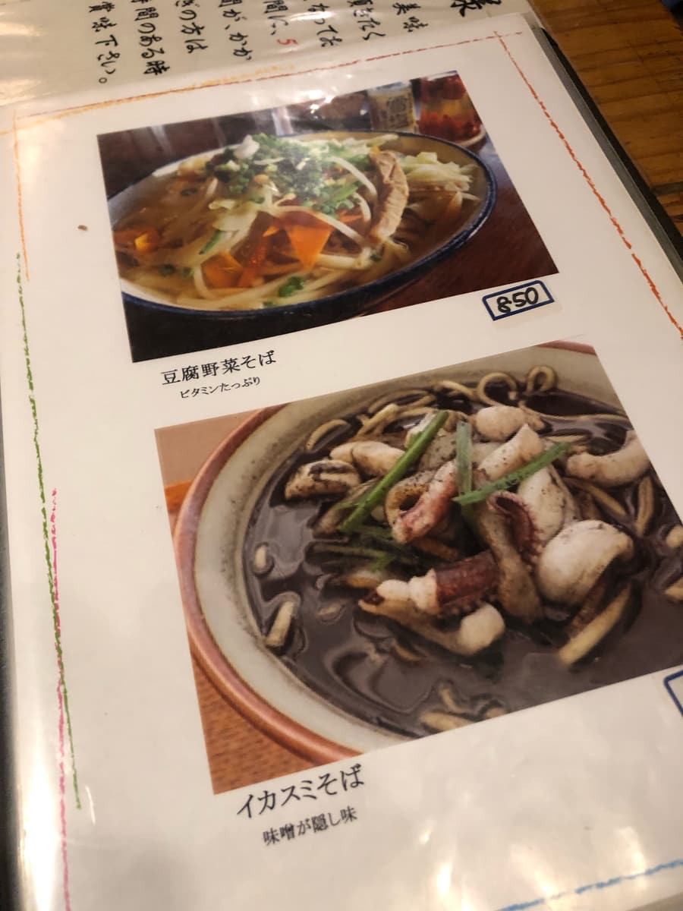
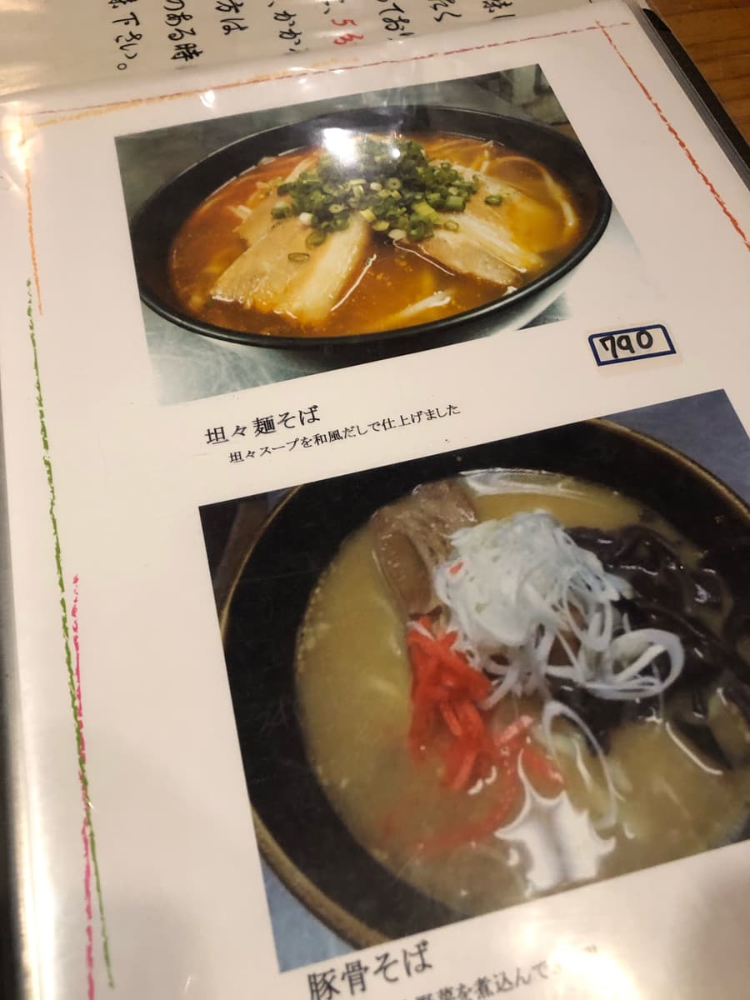
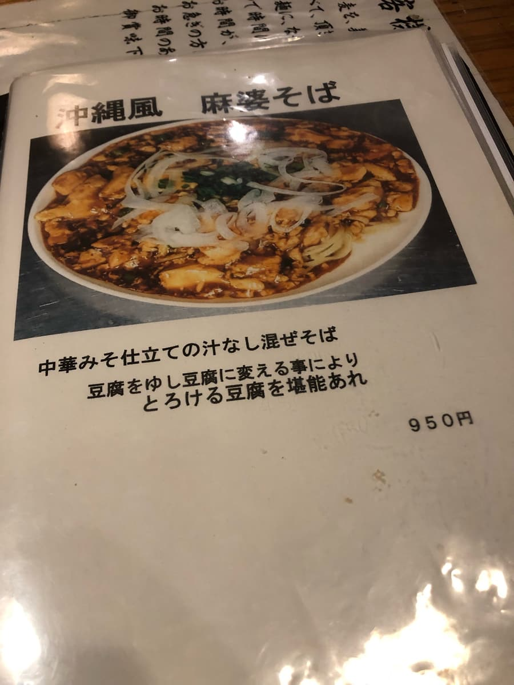
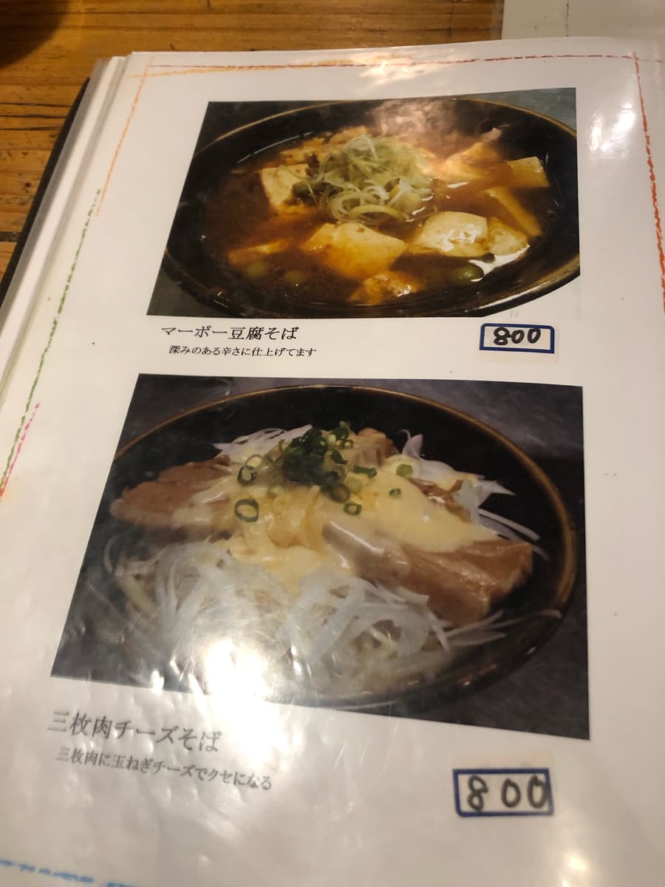
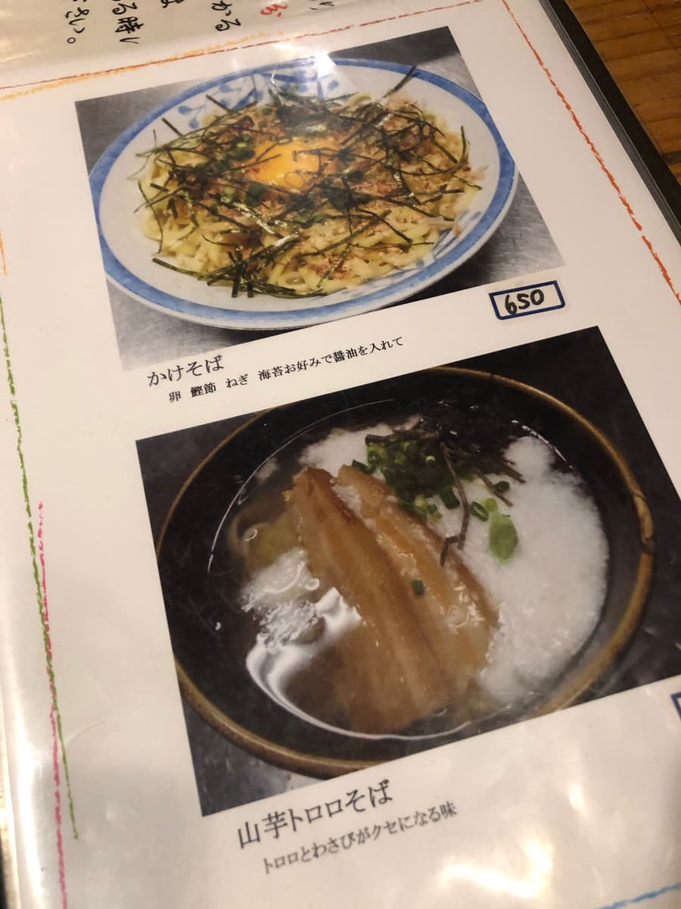
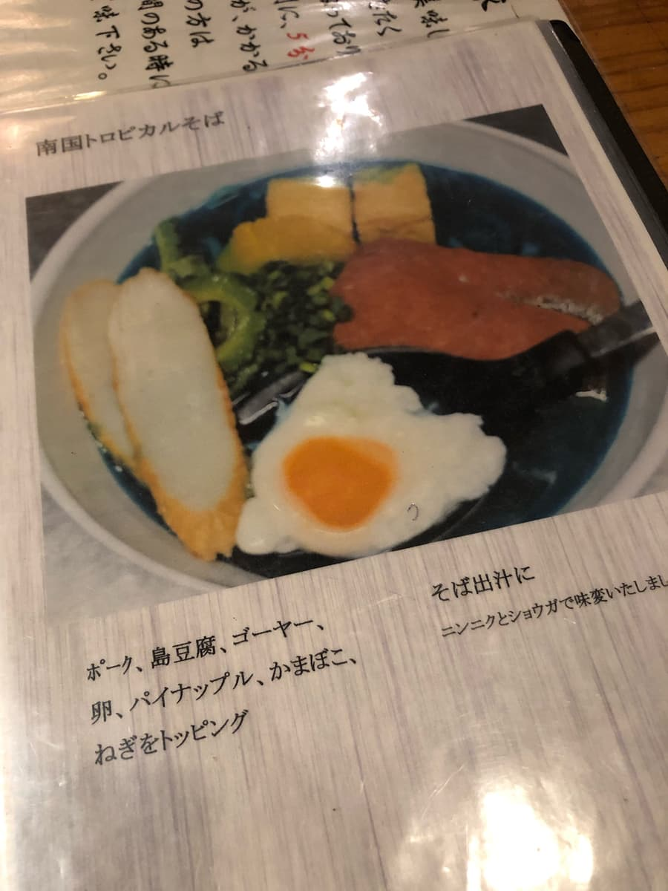
かなり変わり種のメニューを見て楽しんでいると、注文した「沖縄風麻婆そば」が来ました。
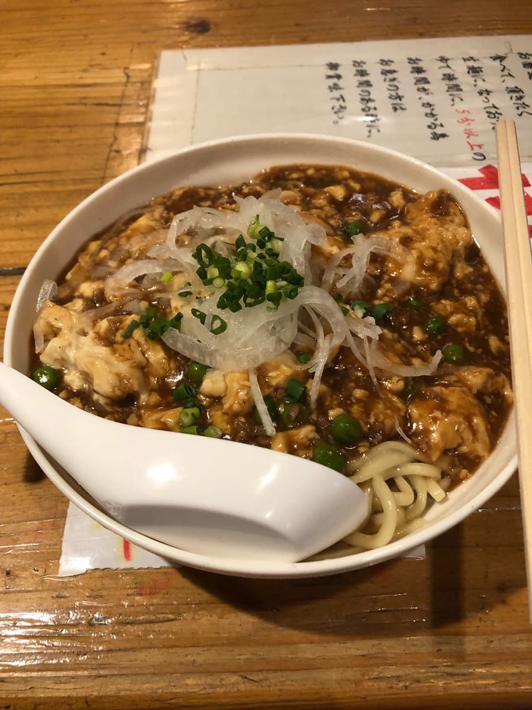
いつもならスープを味わうのですが、こちらの沖縄そばは汁なし担々麺みたいな感じで、スープではなく、マーボー豆腐が沖縄そばに乗っかている感じです。
なので、マーボー豆腐と麺を絡めて頂くことに😊
麺は生麺らしく、モチモチ触感で美味しい😋 マーボー豆腐はピリ辛を想像しましたが、まったく辛くなく、これは子供でも問題ない味ですね😁
玉ねぎのシャキシャキ触感が良いアクセントです。
評価（9.5点/15点）：汁なし担々麺の麻婆豆腐バージョンの沖縄そばでしたね😊 生麺はもちもち触感で美味しかったです。マーボー豆腐なので、個人的にはピリ辛が良かったです。
麺 ：★★★✬☆（3.5）
スープ：★★★☆☆（3）
具 ：★★★☆☆（3）